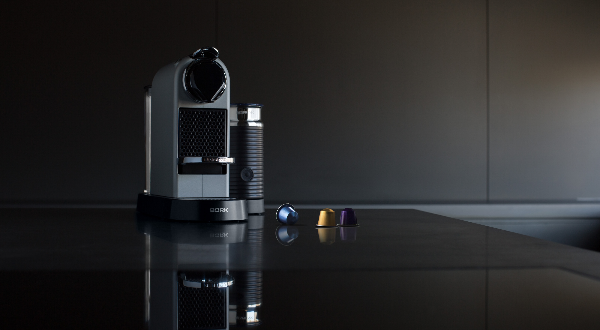
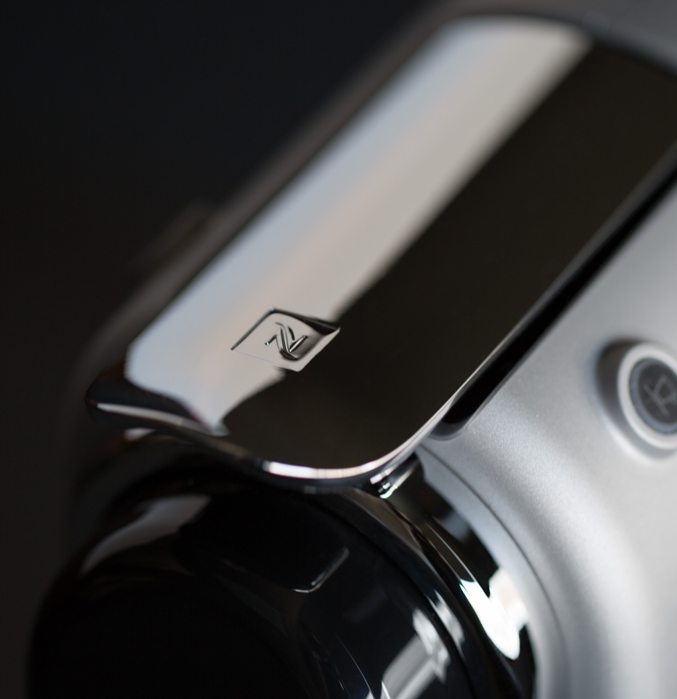
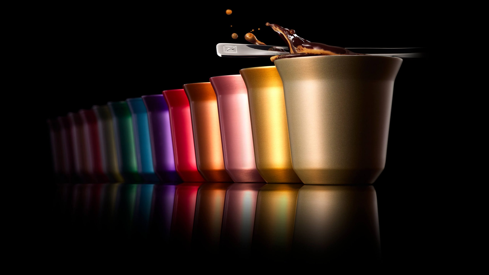
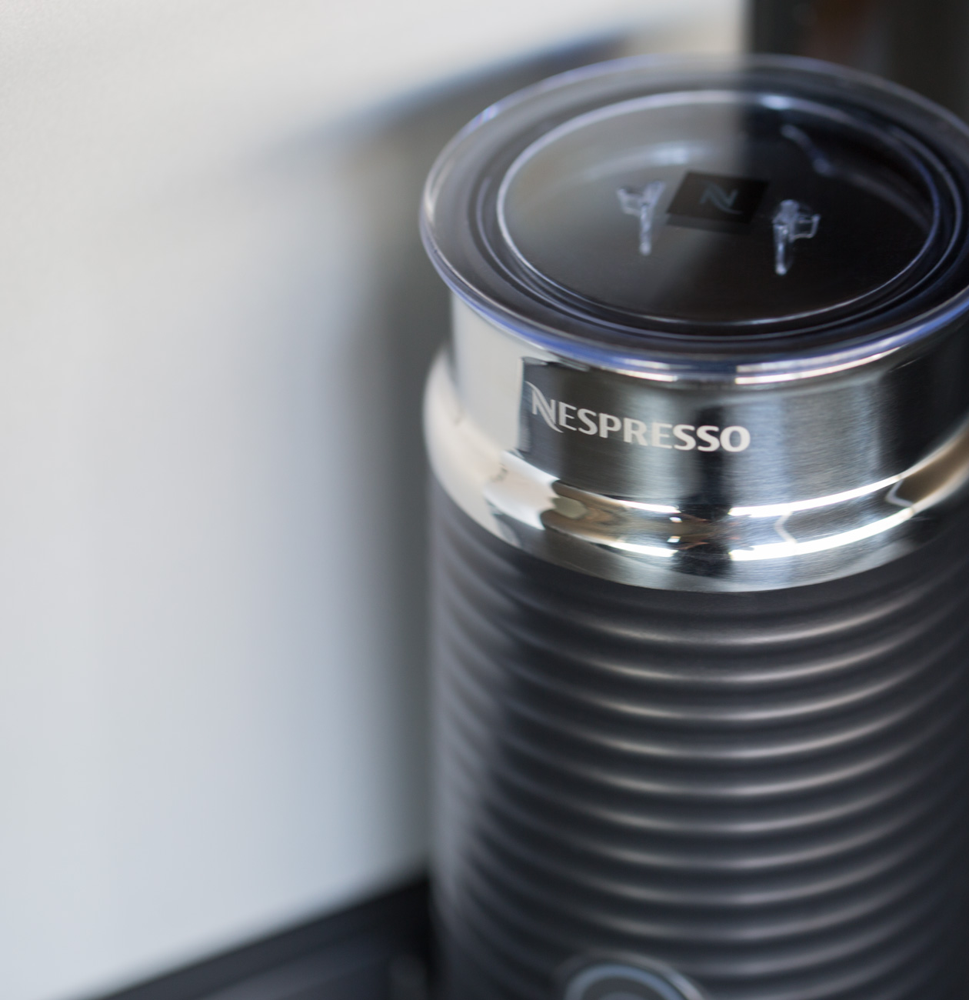
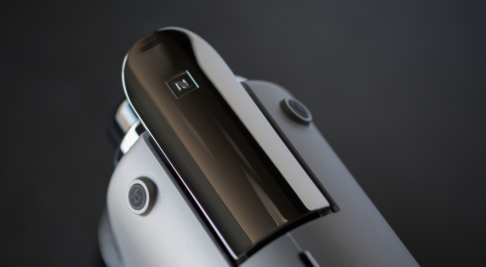
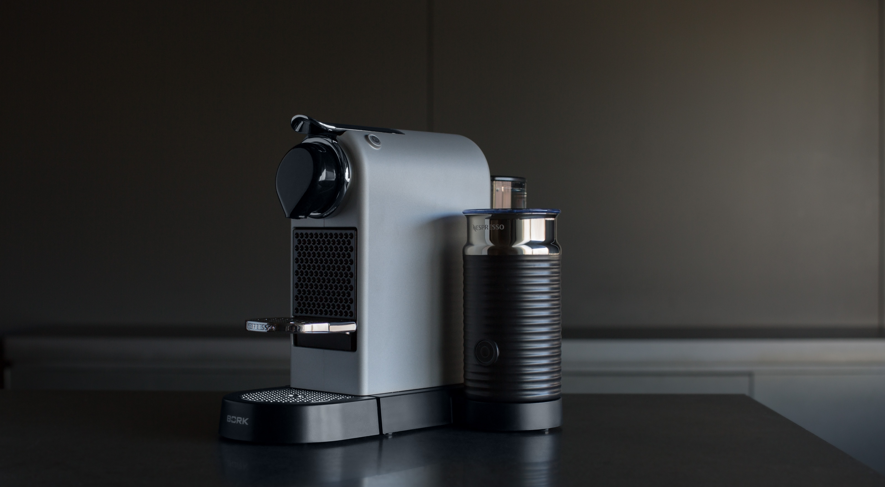

Капсульная кофемашина C533 CITIZ&MILK SILVER
Легкая в управлении система для приготовления ароматного кофе и идеальной молочной пенки в стильном матовом корпусе.
Легкость управления и стильный дизайн
Интуитивно понятное управление позволит легко и быстро приготовить любимый кофе, а компактный размер и стильное цветовое решение сделают кофемашину C533 Citiz&Milk Chrome универсальным дополнением любого интерьера.
Безупречный вкус от NESPRESSO
Точно подобранные параметры приготовления и использование блендов категории Гран Крю от Nespresso гарантирует вам идеальный вкус любимого кофе в каждой чашке. Просто, Быстроо, Вкусно – это девиз капсульных машин BORK&Nespresso.
Молочная пена различного объёма и разной температуры
Аэрочино может приготовить молочную пену различных текстур:
- Для получения большого объема пенки: установите насадку с пружиной, наполните емкость до нижней отметки MAX.
- Для получения малого объема пенки: установите насадку без пружины, наполните емкость до верхней отметки MAX.
- Аэрочино работает в двух режимах: вращение насадки с подогревом и вращение насадки без подогрева.
- Короткое нажатие — вращение насадки с подогревом. Кнопка включения будет светиться красным.
- Длительное нажатие (2 секунды) — вращение насадки без подогрева. Кнопка запуска будет светиться синим.
Программирование размера порции
Кофемашина позволяет выбрать один из 2 вариантов объема воды для приготовления кофе: 40 мл в режиме Espresso или 110 мл в режиме Lungo. Также можно запрограммировать свой объём напитка: нажмите и удерживайте кнопку Espresso или Lungo для подачи кофе в чашку, отпустите кнопку при достижении желаемого объема. Объем кофе сохранится в памяти кофемашины для всех последующих чашек. Для сброса всех настроек необходимо выключить кофемашину. Нажать кнопку Lungo и удерживать в течение 5 секунд. Индикаторы Espresso и Lungo загорятся 3 раза как подтверждение сброса к заводским настройкам.
Технические характеристики

Мощность: 1710 Вт
Давление: 19 бар
Тип кофемашины: Капсульная
Тип капсул: Nespresso
Молоковзбиватель: Есть
Вес: 4 кг
Срок гарантии: 2 года
Объем бака для воды: 1 л
Размер порции: 40 мл/110 мл
Режимы молоковзбивателя: 2
Сохранение настроек: Есть
Длина кабеля: 0,9 м
Материал корпуса: Нержав. сталь, пластик
Цвет: Серебряный (матовый)
Страна производства: Китай